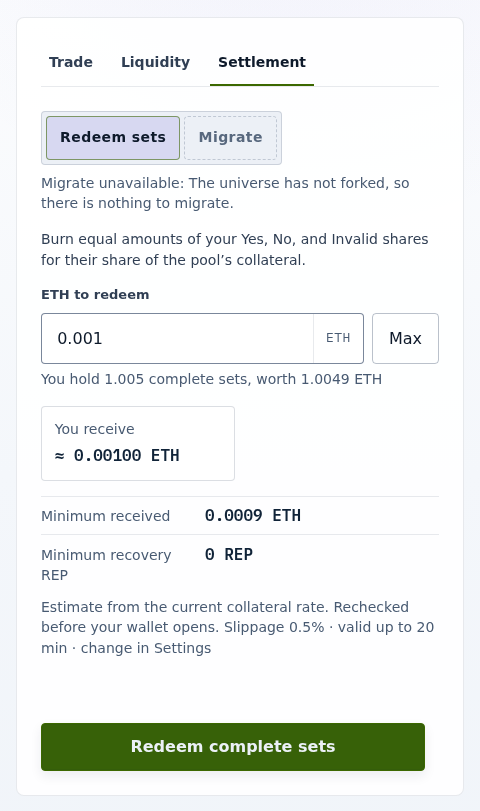

How-to guide
Handle resolution
A trading pool closes to swaps and added liquidity when its question ends; the market finalizes later, when its outcome is final. Use this guide from question end onward to turn LP tokens, complete sets, and winning shares into their redeemable assets.
Unwind after question end
- Remove your LP tokens from the trading pool into Yes and No shares (Remove liquidity).
- Redeem matching Invalid, Yes, and No as complete sets while the question ledger is
Operationaland its universe has not forked. If the universe forks while the question is unresolved, follow Handle a universe fork. - After the market finalizes, redeem the winning share through
QuestionLedger.redeemShares, which requires the question ledger to beOperational. Keep redeeming through this question ledger if its universe forks later; resolved shares cannot migrate.
On an Invalid result, Invalid is the only winning share. Redemption burns the shares and pays collateral at the question ledger’s current rate. For WETH-backed markets, winning-share redemption pays WETH and complete-set redemption through the router pays ETH. A shared security pool child can also pay recovery REP, even when its collateral payout is zero. Redemption requires neither a new report nor an auction buyer.
In the UI
Open the market. A closed market opens on its Settlement tab.
- To redeem complete sets, select Redeem sets, enter an amount in ETH to redeem (or Complete sets to redeem when the claim includes REP), check the ETH estimate and any Recovery REP, and select Redeem complete sets.
- Once the market finalizes, a Redeem Yes, Redeem No, or Redeem Invalid option appears for the winning outcome. It redeems your entire balance of that share through this exact question ledger. Before finalization the option is absent.

Check both asset balances in the selected universe after confirmation. Portfolio shows recovery REP separately from collateral. For a WETH-backed market, check your WETH balance after redeeming winning shares.